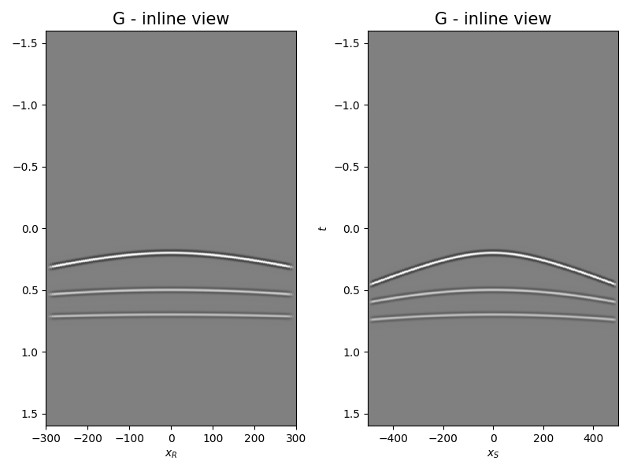
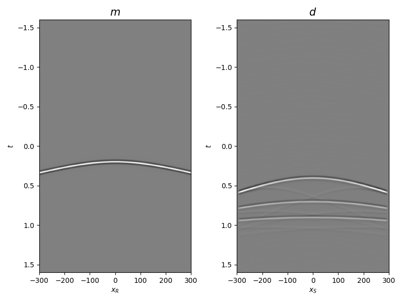

Note
Go to the end to download the full example code.
Multi-Dimensional Deconvolution#
This example shows how to set-up and run a Multi-Dimensional Deconvolution
problem in a distributed fashion, leveraging the pylops_mpi.waveeqprocessing.MDC
class.
More precisely, compared to its counterpart in the PyLops documentation, this example distributes
the frequency slices of the kernel of the MDC operator across multiple processes. Whilst both the
entire model and data sit on all processes, within the MDC operator, and more precisely when the
pylops_mpi.signalprocessing.Fredholm1 is called, different groups of frequencies are
processed by the different ranks.
import numpy as np
from matplotlib import pyplot as plt
from mpi4py import MPI
from pylops.utils.seismicevents import hyperbolic2d, makeaxis
from pylops.utils.tapers import taper3d
from pylops.utils.wavelets import ricker
import pylops_mpi
from pylops_mpi.DistributedArray import local_split, Partition
plt.close("all")
rank = MPI.COMM_WORLD.Get_rank()
size = MPI.COMM_WORLD.Get_size()
dtype = np.float32
cdtype = np.complex64
Let’s start by creating a set of hyperbolic events to be used as our MDC kernel as well as the model
# Input parameters
par = {
"ox": -300,
"dx": 5,
"nx": 121,
"oy": -500,
"dy": 5,
"ny": 201,
"ot": 0,
"dt": 0.002,
"nt": 800,
"f0": 20,
"nfmax": 400,
}
t0_m = 0.2
vrms_m = 1100.0
amp_m = 1.0
t0_G = (0.2, 0.5, 0.7)
vrms_G = (1200.0, 1500.0, 2000.0)
amp_G = (1.0, 0.6, 0.5)
# Taper
tap = taper3d(par["nt"], (par["ny"], par["nx"]), (5, 5), tapertype="hanning")
# Create axis
t, t2, x, y = makeaxis(par)
# Create wavelet
wav = ricker(t[:41], f0=par["f0"])[0]
# Generate model
mrefl, mwav = hyperbolic2d(x, t, t0_m, vrms_m, amp_m, wav)
# Generate operator
G, Gwav = np.zeros((par["ny"], par["nx"], par["nt"])), np.zeros(
(par["ny"], par["nx"], par["nt"])
)
for iy, y0 in enumerate(y):
G[iy], Gwav[iy] = hyperbolic2d(x - y0, t, t0_G, vrms_G, amp_G, wav)
G, Gwav = G * tap, Gwav * tap
# Add negative part to data and model
mrefl = np.concatenate((np.zeros((par["nx"], par["nt"] - 1)), mrefl), axis=-1)
mwav = np.concatenate((np.zeros((par["nx"], par["nt"] - 1)), mwav), axis=-1)
Gwav2 = np.concatenate((np.zeros((par["ny"], par["nx"], par["nt"] - 1)), Gwav), axis=-1)
# Move to frequency
Gwav_fft = np.fft.rfft(Gwav2, 2 * par["nt"] - 1, axis=-1)
Gwav_fft = (Gwav_fft[..., : par["nfmax"]])
# Move frequency/time to first axis
mrefl, mwav = mrefl.T, mwav.T
Gwav_fft = Gwav_fft.transpose(2, 0, 1)
# Choose how to split frequencies to ranks
nf = par["nfmax"]
nf_rank = local_split((nf,), MPI.COMM_WORLD, Partition.SCATTER, 0)
nf_ranks = np.concatenate(MPI.COMM_WORLD.allgather(nf_rank))
ifin_rank = np.insert(np.cumsum(nf_ranks)[:-1], 0, 0)[rank]
ifend_rank = np.cumsum(nf_ranks)[rank]
# Extract batch of frequency slices (in practice, this will be directly read from input file)
G = Gwav_fft[ifin_rank:ifend_rank].astype(cdtype)
Let’s now define the distributed operator and model as well as compute the data
# Define operator
MDCop = pylops_mpi.waveeqprocessing.MPIMDC((1.0 * par["dt"] * np.sqrt(par["nt"])) * G,
nt=2 * par["nt"] - 1, nv=1, nfreq=nf,
dt=par["dt"], dr=1.0, twosided=True,
fftengine="scipy", prescaled=True)
# Create model
m = pylops_mpi.DistributedArray(global_shape=(2 * par["nt"] - 1) * par["nx"] * 1,
partition=Partition.BROADCAST,
dtype=dtype)
m[:] = mrefl.astype(dtype).ravel()
# Create data
d = MDCop @ m
dloc = d.asarray().real.reshape(2 * par["nt"] - 1, par["ny"])
Let’s display what we have so far: operator, input model, and data
if rank == 0:
fig, axs = plt.subplots(1, 2, figsize=(8, 6))
axs[0].imshow(
Gwav2[int(par["ny"] / 2)].T,
aspect="auto",
interpolation="nearest",
cmap="gray",
vmin=-np.abs(Gwav2.max()),
vmax=np.abs(Gwav2.max()),
extent=(x.min(), x.max(), t2.max(), t2.min()),
)
axs[0].set_title("G - inline view", fontsize=15)
axs[0].set_xlabel(r"$x_R$")
axs[1].set_ylabel(r"$t$")
axs[1].imshow(
Gwav2[:, int(par["nx"] / 2)].T,
aspect="auto",
interpolation="nearest",
cmap="gray",
vmin=-np.abs(Gwav2.max()),
vmax=np.abs(Gwav2.max()),
extent=(y.min(), y.max(), t2.max(), t2.min()),
)
axs[1].set_title("G - inline view", fontsize=15)
axs[1].set_xlabel(r"$x_S$")
axs[1].set_ylabel(r"$t$")
fig.tight_layout()
fig, axs = plt.subplots(1, 2, figsize=(8, 6))
axs[0].imshow(
mwav,
aspect="auto",
interpolation="nearest",
cmap="gray",
vmin=-np.abs(mwav.max()),
vmax=np.abs(mwav.max()),
extent=(x.min(), x.max(), t2.max(), t2.min()),
)
axs[0].set_title(r"$m$", fontsize=15)
axs[0].set_xlabel(r"$x_R$")
axs[0].set_ylabel(r"$t$")
axs[1].imshow(
dloc,
aspect="auto",
interpolation="nearest",
cmap="gray",
vmin=-np.abs(dloc.max()),
vmax=np.abs(dloc.max()),
extent=(x.min(), x.max(), t2.max(), t2.min()),
)
axs[1].set_title(r"$d$", fontsize=15)
axs[1].set_xlabel(r"$x_S$")
axs[1].set_ylabel(r"$t$")
fig.tight_layout()
- 
- 
We are now ready to compute the adjoint (i.e., cross-correlation) and invert back for our input model
# Adjoint
madj = MDCop.H @ d
madjloc = madj.asarray().real.reshape(2 * par["nt"] - 1, par["nx"])
# Inverse
m0 = pylops_mpi.DistributedArray(global_shape=(2 * par["nt"] - 1) * par["nx"] * 1,
partition=Partition.BROADCAST,
dtype=cdtype)
m0[:] = 0
minv = pylops_mpi.cgls(MDCop, d, x0=m0, niter=50, show=True if rank == 0 else False)[0]
minvloc = minv.asarray().real.reshape(2 * par["nt"] - 1, par["nx"])
if rank == 0:
fig = plt.figure(figsize=(8, 6))
ax1 = plt.subplot2grid((1, 5), (0, 0), colspan=2)
ax2 = plt.subplot2grid((1, 5), (0, 2), colspan=2)
ax3 = plt.subplot2grid((1, 5), (0, 4))
ax1.imshow(
madjloc,
aspect="auto",
interpolation="nearest",
cmap="gray",
vmin=-np.abs(madjloc.max()),
vmax=np.abs(madjloc.max()),
extent=(x.min(), x.max(), t2.max(), t2.min()),
)
ax1.set_title("Adjoint m", fontsize=15)
ax1.set_xlabel(r"$x_V$")
ax1.set_ylabel(r"$t$")
ax2.imshow(
minvloc,
aspect="auto",
interpolation="nearest",
cmap="gray",
vmin=-np.abs(minvloc.max()),
vmax=np.abs(minvloc.max()),
extent=(x.min(), x.max(), t2.max(), t2.min()),
)
ax2.set_title("Inverted m", fontsize=15)
ax2.set_xlabel(r"$x_V$")
ax2.set_ylabel(r"$t$")
ax3.plot(
madjloc[:, int(par["nx"] / 2)] / np.abs(madjloc[:, int(par["nx"] / 2)]).max(), t2, "r", lw=5
)
ax3.plot(
minvloc[:, int(par["nx"] / 2)] / np.abs(minvloc[:, int(par["nx"] / 2)]).max(), t2, "k", lw=3
)
ax3.set_ylim([t2[-1], t2[0]])
fig.tight_layout()
CGLS
-----------------------------------------------------------------
The Operator Op has 321399 rows and 193479 cols
damp = 0.000000e+00 tol = 1.000000e-04 niter = 50
-----------------------------------------------------------------
Itn x[0] r1norm r2norm
1 0.00e+00+0.00e+00j 3.8528e+01 3.8528e+01
2 0.00e+00+0.00e+00j 2.6623e+01 2.6623e+01
3 0.00e+00+0.00e+00j 2.0382e+01 2.0382e+01
4 0.00e+00+0.00e+00j 1.6471e+01 1.6471e+01
5 0.00e+00+0.00e+00j 1.3499e+01 1.3499e+01
6 0.00e+00+0.00e+00j 1.1528e+01 1.1528e+01
7 0.00e+00+0.00e+00j 9.8815e+00 9.8815e+00
8 0.00e+00+0.00e+00j 8.4153e+00 8.4153e+00
9 0.00e+00+0.00e+00j 7.4486e+00 7.4486e+00
10 0.00e+00+0.00e+00j 6.6674e+00 6.6674e+00
11 0.00e+00+0.00e+00j 5.9781e+00 5.9781e+00
21 0.00e+00+0.00e+00j 2.9884e+00 2.9884e+00
31 0.00e+00+0.00e+00j 1.9261e+00 1.9261e+00
41 0.00e+00+0.00e+00j 1.3943e+00 1.3943e+00
42 0.00e+00+0.00e+00j 1.3501e+00 1.3501e+00
43 0.00e+00+0.00e+00j 1.3106e+00 1.3106e+00
44 0.00e+00+0.00e+00j 1.2716e+00 1.2716e+00
45 0.00e+00+0.00e+00j 1.2368e+00 1.2368e+00
46 0.00e+00+0.00e+00j 1.2034e+00 1.2034e+00
47 0.00e+00+0.00e+00j 1.1720e+00 1.1720e+00
48 0.00e+00+0.00e+00j 1.1520e+00 1.1520e+00
49 0.00e+00+0.00e+00j 1.1306e+00 1.1306e+00
50 0.00e+00+0.00e+00j 1.1048e+00 1.1048e+00
Iterations = 50 Total time (s) = 6.82
-----------------------------------------------------------------
To run this tutorial with our NCCL backend, refer to Multi-Dimensional Deconvolution with NCCL tutorial in the repository.
Total running time of the script: (0 minutes 8.702 seconds)